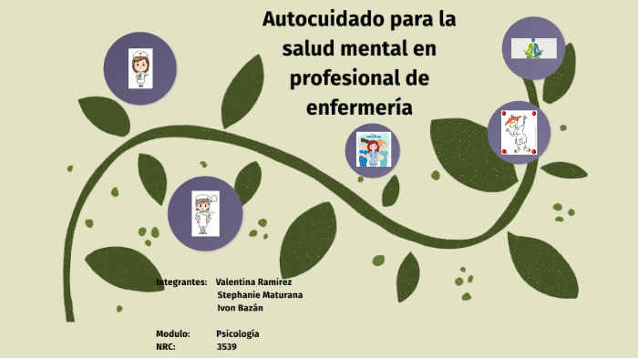
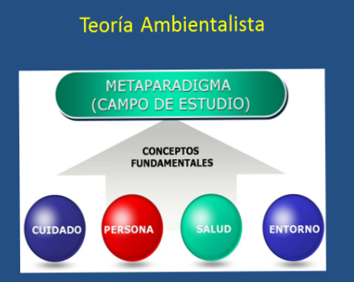
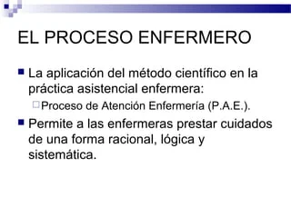

Los profesionales de enfermería están en la línea de acción en la prestación de los servicios y desempeñan una función importante en la atención centrada en las personas y comunidades. En muchos países son líderes o actores clave en los equipos de salud multiprofesionales e interdisciplinarios. Proporcionan una amplia gama de los servicios a todos los niveles del sistema de salud. Hay escasez de enfermeras en la Región de las Américas debido principalmente a la migración de profesionales a otras regiones, a las diferentes condiciones de desarrollo económico de los países, las políticas de recursos humanos en salud y de enfermería, las precarias condiciones de empleo y de trabajo y a la falta de regulación profesional. La enfermería abarca el cuidado autónomo y colaborativo de personas de todas las edades, familias, grupos y comunidades, enfermos o sanos y en todos los entornos.
Las enfermeras están en la línea de acción en la prestación de servicios y desempeñan un papel importante en la atención centrada en la persona. En varios países, son líderes o actores clave en los equipos de salud multidisciplinarios e interdisciplinarios. Proporcionan una amplia gama de servicios de salud en todos los niveles del sistema de salud. Para que los países logren la meta de Acceso universal a la salud y cobertura universal de salud, también denominada Salud universal, se debe garantizar la calidad, cantidad y relevancia de la fuerza laboral de enfermería.
CONCEPTOS DE LA ENFERMERIA
- Autocuidado
- Investigacion de Enfermeria
- Metaparadigma de Enfermeria
- Metolodia de los cuidados enfermeros: proceso de atencion de enfermeria
- Modelos y teorias de la enfermeria
UNIVERSIDADES
REFERENCIA

Autocuidado
El autocuidado o cuidado personal es cualquier acción reguladora del funcionamiento del ser humano que se encuentra bajo el control del propio individuo, realizada de forma deliberada y por iniciativa propia.El concepto fue propuesto por Dorothea Orem y está relacionado con las acciones intencionales que realiza la persona para controlar factores internos o externos que pueden comprometer su vida y desarrollo posterior. El autocuidado es visto como una solución parcial al aumento global de los costos de la atención sanitaria. La noción de que el autocuidado es un pilar fundamental de la salud y la asistencia social, significa que es un componente esencial de un sistema moderno de atención sanitaria regido por la burocracia y la legislación. El autocuidado es la forma básica de atención primaria causada por enfermedad. La autogestión es fundamental. Es un propósito aprendido y continuado. En la filosofía, el autocuidado hace referencia al cuidado y cultivo de uno mismo en un sentido amplio, centrándose en particular en el alma y el conocimiento del propio individuo.
Investigacion de Enfermeria
La investigación en enfermería, como en otras ciencias, debe dar respuesta a la evolución de la sociedad y de la profesión y consagrar sus esfuerzos a mejorar los cuidados de salud de las personas, las familias y la comunidad. La búsqueda de cuidados de salud de calidad y eficientes ha situado en primera línea la práctica profesional basada en pruebas y la investigación en cuidados. Esta investigación es una búsqueda sistemática que trata de aportar nuevos conocimientos y abarca todos los aspectos de la salud que son de interés para la enfermería, entre ellos la promoción de la salud, la prevención de la enfermedad, el cuidado de las personas de todas las edades durante la enfermedad y la recuperación, o para que tengan una muerte pacífica y digna, tal y como indica el Consejo Internacional de Enfermería. Este organismo declara en su Guía para el desarrollo de la investigación en enfermería que los hallazgos de la investigación deben ser ampliamente difundidos y su utilización alentada cuando sean apropiados.
La investigación en cuidados permite descubrir, buscar y plantearse preguntas sobre los problemas a los que se enfrenta el enfermero en su práctica diaria, intentando responder y utilizando para ello un pensamiento crítico, reflexivo e innovador, en la búsqueda por optimizar la calidad de la atención que brinda al usuario y el desarrollo de su profesión, generando así nuevos conocimientos y aportando pruebas para la valoración y el reconocimiento de la profesión por la sociedad.

Metaparadigma de Enfermeria
El metaparadigma en enfermería es el conjunto de conceptos esenciales que identifican los fenómenos de interés para la enfermería, constituye el núcleo disciplinar de la enfermería o bien, el núcleo ontológico-epistemológico de la misma El metaparadigma de enfermería contiene de manera abstracta los elementos centrales que posibilitan la existencia de la enfermería como disciplina, como práctica y como fenómeno. Existe acuerdo general en las diferentes corrientes teóricas de Enfermería en cuanto a los elementos que constituyen el metaparadigma.

Metolodia de los cuidados enfermeros: proceso de atencion de enfermeria
El proceso enfermero también denominado proceso de enfermería (PE) o proceso de atención de enfermería (PAE), es un método sistemático que brinda cuidados humanistas eficientes centrados en el logro de resultados esperados, apoyándose en un modelo científico realizado por un profesional de enfermería. Es un método sistemático y organizado para administrar cuidados individualizados, de acuerdo con el enfoque básico de que cada persona o grupo de ellas responde de forma distinta ante una alteración real o potencial de la salud.Originalmente fue una forma adaptada de resolución de problemas, y está clasificado como una teoría deductiva en sí misma.
Modelos y teorias de la enfermeria
Los modelos y teorías de la enfermería pretenden describir,establecer y examinar los fenómenos que conforman la práctica de la enfermería general. Se asume por la disciplina que para poder determinar que existe una teoría enfermera esta debe contener los elementos del metaparadigma de enfermería. Cada disciplina hace suyos los términos relacionados con la teoría y su desarrollo con el fin de dotarla de un cuerpo de conocimientos que le permitan orientar el ejercicio de la disciplina. En la enfermería se contemplan los siguientes términos:
| FILOSOFIA | MODELOS CONCEPTUALES Y GRANDES TEORIAS | TEORIAS DE ENFERMERIA DEL NIVEL MEDIO |
|---|---|---|
| Watson | Neuman | Mercer |
| Nigthtingale | Orem | Pepla |
| Hall | Roy | Erickson, tomlin y sawin |
| Henderson | Rogers | Travelbee |
| Abdellah | Johnson | Kolcaba |